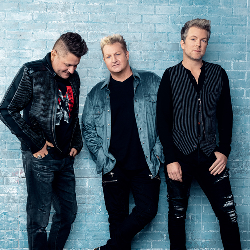

A Brief History
Country music originated in the rural southern United States during the early 20th century, drawing inspiration from Appalachian folk music, traditional ballads, gospel, blues, and Irish and Scottish musical traditions. In the 1920s, the first commercial country recordings helped popularize the genre, while radio programs such as the Grand Ole Opry established Nashville, Tennessee, as the heart of country music. Over the decades, country evolved into styles such as honky-tonk, bluegrass, outlaw country, and contemporary country, with artists like Johnny Cash, Dolly Parton, Garth Brooks, and Luke Combs helping bring the genre to audiences worldwide.
What Makes It Unique
What makes country music unique is its emphasis on storytelling and emotional honesty. Many songs explore everyday experiences such as love, family, heartbreak, hard work, faith, and life in rural communities. Traditional country music is known for its use of acoustic guitar, fiddle, banjo, steel guitar, and harmonica, although modern country often blends these instruments with elements of rock and pop.
Why It's Popular
Country music has a strong sense of community and culture. Festivals, concerts, and traditions like line dancing create shared experiences that bring fans together. Combined with artists who often write about real-life experiences, this authenticity has helped country music remain one of the most enduring and popular genres in the world.
Recommended Artists

Chris Stapleton

Dolly Parton

Johnny Cash
Luke Combs
